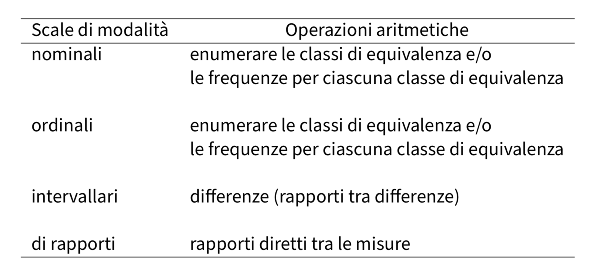

La misurazione in psicologia
Contents
La misurazione in psicologia#
In questo capitolo verranno introdotte alcune nozioni di base relative ai temi della misurazione quantitativa delle caratteristiche psicologiche. In particolare, verrà presentata la teoria delle scale di misura di [Ste46].
Misurare la mente umana#
Introduco il problema della misurazione in psicologia parlando dell’intelligenza. In quanto psicologi, siamo abituati a pensare alla misurazione dell’intelligenza, ma anche le persone che non sono psicologi sono ben familiari con la misurazione dell’intelligenza: tra le misurazioni delle caratteristiche psicologiche, infatti, la misurazione dell’intelligenza è forse la più conosciuta.
I test di intelligenza consistono in una serie di problemi di carattere verbale, numerico o simbolico. Come ci si può aspettare, alcune persone riescono a risolvere correttamente un numero maggiore di problemi di altre. Possiamo contare il numero di risposte corrette e osservare le differenze individuali nei punteggi calcolati. Scopriamo in questo modo che le differenze individuali nell’abilità di risolvere tali problemi risultano sorprendentemente stabili nell’età adulta. Inoltre, diversi test di intelligenza tendono ad essere correlati positivamente: le persone che risolvono un maggior numero di problemi verbali, in media, tenderanno anche a risolvere correttamente un numero più grande di problemi numerici e simbolici. Esiste quindi una notevole coerenza delle differenze osservate tra le persone, sia nel tempo sia considerando diverse procedure di test e valutazione.
Avendo stabilito che ci sono differenze individuali tra le persone, è possibile esaminare le associazioni tra i punteggi dei test di intelligenza e altre variabili. Possiamo indagare se le persone con punteggi più alti nei test di intelligenza, rispetto a persone che ottengono punteggi più bassi, hanno più successo sul lavoro; se guadagnano di più; se votano in modo diverso; o se hanno un’aspettativa di vita più alta. Possiamo esaminare le differenze nei punteggi dei test di intelligenza in funzione di variabili come il genere, il gruppo etnico-razziale o lo stato socio-economico. Possiamo fare ricerche sull’associazione tra i punteggi dei test di intelligenza e l’efficienza dell’elaborazione neuronale, i tempi di reazione o la quantità di materia grigia all’interno della scatola cranica. Tutte queste ricerche sono state condotte e gli psicologi hanno scoperto una vasta gamma di associazioni tra le misure dell’intelligenza e altre variabili. Alcune di queste associazioni sono grandi e stabili, altre sono piccole e difficili da replicare. In riferimento all’intelligenza, dunque, gli psicologi hanno condotto un enorme numero di ricerche ponendosi domande diverse. In quali condizioni si verificano determinati effetti? Quali variabili mediano o moderano le relazioni tra i punteggi dei test di intelligenza e altre variabili? Queste relazioni si mantengono stabili in diversi gruppi di persone? Le ricerche sull’intelligenza umana sono un campo in continuo sviluppo.
Tuttavia, una domanda sorge spontanea: che cosa misurano esattamente i test di intelligenza? Dopo un secolo di ricerche sui punteggi dei test di intelligenza e, in generale, sui test psicologici, non sappiamo ancora rispondere a questa domanda. Questa considerazione relativa ai test di intelligenza ci conduce dunque alle seguenti domande: che cos’è esattamente un costrutto psicologico (come l’intelligenza, ad esempio)? Come può essere misurato un costrutto psicologico? Queste sono domande a cui è difficile rispondere e a cui è dedicata un’intera area di ricerca, quella della teoria della misurazione psicologica. Non possiamo qui entrare nel merito delle complessità della teoria della misurazione psicologica (questi temi più generali verranno approfonditi nei successivi insegnamenti sulla testistica psicologica). La motivazione delle considerazioni precedenti era solo quella di fare qualche accenno al contesto generale all’interno del quale si colloca il tema di cui ci occuperemo qui, ovvero quello delle scale di misura.
Le scale di misura#
In generale possiamo dire che la teoria della misurazione si occupa dello studio delle relazioni esistenti tra due domini: il “mondo fisico” e il “mondo psicologico”. Secondo la teoria della misurazione, la misurazione è un’attività rappresentativa, cioè è un processo di assegnazione di numeri in modo tale da preservare, all’interno del dominio numerico, le relazioni qualitative che sono state osservate nel mondo empirico. La teoria della misurazione ha lo scopo di specificare le condizioni necessarie per la costruzione di una rappresentazione adeguata delle relazioni empiriche all’interno di un sistema numerico. Da una prospettiva formale, le operazioni descritte dalla teoria della misurazione possono essere concettualizzate in termini di mappatura tra le relazioni esistenti all’interno di due insiemi (quello empirico e quello numerico). Il risultato di questa attività è chiamato “scala di misurazione”.
[Ste46] ha proposto una famosa teoria delle scale di misura. [Ste46] ci fa notare che, in linea di principio, le variabili psicologiche sono in grado di rappresentare (preservare) con diversi gradi di accuratezza le relazioni qualitative che sono state osservate nei fenomeni psicologici. Secondo la teoria di Stevens, possiamo distinguere tra quattro scale di misura: le scale nominali (nominal scales), ordinali (ordinal scales), a intervalli (interval scales), di rapporti (ratio scales). Tali scale di misura consentono operazioni aritmetiche diverse, come indicato nella tabella successiva, in quanto ciasuna di esse è in grado di “catturare” soltanto alcune delle proprietà dei fenomeni psicologici che intende misurare.

Scala nominale#
Il livello di misurazione più semplice è quello della scala nominale. Questa scala di misurazione corrisponde ad una tassonomia. I simoboli o numeri che costituiscono questa scala non sono altro che i nomi delle categorie che utilizziamo per classificare i fenomeni psicologici. In base alle misure fornite da una scala nominale, l’unica cosa che siamo in grado di dire a proposito di una caratteristica psicologica è se essa è uguale o no ad un’altra caratteristica psicologica.
La scala nominale raggruppa dunque i dati in categorie qualitative mutuamente esclusive (cioè nessun dato si può collocare in più di una categoria). Esiste la sola relazione di equivalenza tra le misure delle u.s., cioè nella scala nominale gli elementi del campione appartenenti a classi diverse sono differenti, mentre tutti quelli della stessa classe sono tra loro equivalenti: \(x_i = x_j\) oppure \(x_i \neq x_j\).
L’unica operazione algebrica che possiamo compiere sulle modalità della scala nominale è quella di contare le u.s. che appartengono ad ogni modalità e contare il numero delle modalità (classi di equivalenza). Dunque la descrizione dei dati avviene tramite le frequenze assolute e le frequenze relative.
A partire da una scala nominale è possibile costruire altre scale nominali che sono equivalenti alla prima trasformando i valori della scala di partenza in modo tale da cambiare i nomi delle modalità, ma lasciando però inalterata la suddivisione u.s. nelle medesime classi di equivalenza. Questo significa che prendendo una variabile misurata su scala nominale e cambiando i nomi delle sue categorie otteniamo una nuova variabile esattamente corrispondente alla prima.
Scala ordinale#
La scala ordinale conserva la proprietà della scala nominale di classificare ciascuna u.s. all’interno di una e una sola categoria, ma alla relazione di equivalenza tra elementi di una stessa classe aggiunge la relazione di ordinamento tra le classi di equivalenza. Essendo basata su una relazione d’ordine, una scala ordinale descrive soltanto l’ordine di rango tra le modalità, ma non ci dà alcuna informazione su quanto una modalità sia più grande di un’altra. Non ci dice, per esempio, se la distanza tra le modalità \(a\) e \(b\) sia uguale, maggiore o minore della distanza tra le modalità \(b\) e \(c\).
Esempio
Un esempio classico di scala ordinale è quello della scala Mohs per la determinazione della durezza dei minerali. Per stabilire la durezza dei minerali si usa il criterio empirico della scalfittura. Vengono stabiliti livelli di durezza crescente da 1 a 10 con riferimento a dieci minerali: talco, gesso, calcite, fluorite, apatite, ortoclasio, quarzo, topazio, corindone e diamante. Un minerale appartenente ad uno di questi livelli se scalfisce quello di livello inferiore ed è scalfito da quello di livello superiore.
Scala ad intervalli#
La scala ad intervalli include le proprietà di quella nominale e di quella ordinale, e in più consente di misurare le distanze tra le coppie di u.s. nei termini di un intervallo costante, chiamato unità di misura, a cui viene attribuito il valore “1”. La posizione dell’origine della scala, cioè il punto zero, è scelta arbitrariamente, nel senso che non indica l’assenza della quantità che si sta misurando. Avendo uno zero arbitrario, questa scala di misura consente valori negativi. Lo zero, infatti, non viene attribuito all’u.s. in cui la proprietà misurata risulta assente.
La scala a intervalli equivalenti ci consente di effettuare operazioni algebriche basate sulla differenza tra i numeri associati ai diversi punti della scala, operazioni algebriche non era possibile eseguire nel caso di misure a livello di scala ordinale o nominale. Il limite della scala ad intervalli è quello di non consentire il calcolo del rapporto tra coppie di misure. Possiamo dire, per esempio, che la distanza tra \(a\) e \(b\) è la metà della distanza tra \(c\) e \(d\). Oppure che la distanza tra \(a\) e \(b\) è uguale alla distanza tra \(c\) e \(d\). Non possiamo dire, però, che \(a\) possiede la proprietà misurata in quantità doppia rispetto \(b\). Non possiamo cioè stabilire dei rapporti diretti tra le misure ottenute. Solo per le differenze tra le modalità sono dunque permesse tutte le operazioni aritmetiche: le differenze possono essere tra loro sommate, elevate a potenza oppure divise, determinando così le quantità che stanno alla base della statistica inferenziale.
Nelle scale ad intervalli equivalenti, l’unità di misura è arbitraria, ovvero può essere cambiata attraverso una dilatazione, operazione che consiste nel moltiplicare tutti i valori della scala per una costante positiva. Poiché l’aggiunta di una costante non altera le differenze tra i valori della scala, è anche ammessa la traslazione, operazione che consiste nel sommare una costante a tutti i valori della scala. Essendo la scala invariate rispetto alla traslazione e alla dilatazione, le trasformazioni ammissibili sono le trasformazioni lineari:
L’aspetto che rimane invariante a seguito di una trasformazione lineare è l’uguaglianza dei rapporti fra intervalli.
Esempio di scala ad intervalli è la temperatura misurata in gradi Celsius o Fahrenheit, ma non Kelvin. Come per la scala nominale, è possibile stabilire se due modalità sono uguali o diverse: 30\(^\circ\)C \(\neq\) 20\(^\circ\)C. Come per la scala ordinale è possibile mettere due modalità in una relazione d’ordine: 30\(^\circ\)C \(>\) 20\(^\circ\)C. In aggiunta ai casi precedenti, però, è possibile definire una unità di misura per cui è possibile dire che tra 30\(^\circ\)C e 20\(^\circ\)C c’è una differenza di 30\(^\circ\) - 20\(^\circ\) = 10\(^\circ\)C. I valori di temperatura, oltre a poter essere ordinati secondo l’intensità del fenomeno, godono della proprietà che le differenze tra loro sono direttamente confrontabili e quantificabili.
Il limite della scala ad intervalli è quello di non consentire il calcolo del rapporto tra coppie di misure. Ad esempio, una temperatura di 80\(^\circ\)C non è il doppio di una di 40\(^\circ\)C. Se infatti esprimiamo le stesse temperature nei termini della scala Fahrenheit, allora i due valori non saranno in rapporto di 1 a 2 tra loro. Infatti, 20\(^\circ\)C = 68\(^\circ\)F e 40\(^\circ\)C = 104\(^\circ\)F. Questo significa che la relazione “il doppio di” che avevamo individuato in precedenza si applicava ai numeri della scala centigrada, ma non alla proprietà misurata (cioè la temperatura). La decisione di che scala usare (Centigrada vs. Fahrenheit) è arbitraria. Ma questa arbitrarietà non deve influenzare le inferenze che traiamo dai dati. Queste inferenze, infatti, devono dirci qualcosa a proposito della realtà empirica e non possono in nessun modo essere condizionate dalle nostre scelte arbitrarie che ci portano a scegliere la scala Centigrada piuttosto che quella Fahrenheit.
Consideriamo ora l’aspetto invariante di una trasformazione lineare, ovvero l’uguaglianza dei rapporti fra intervalli. Prendiamo in esame, ad esempio, tre temperature: \(20^\circ C = 68^\circ F\), \(15^\circ C = 59^\circ F\), \(10^\circ C = 50 ^\circ F\).
È facile rendersi conto del fatto che i rapporti fra intervalli restano costanti indipendentemente dall’unità di misura che è stata scelta:
Scala di rapporti#
Nella scala a rapporti equivalenti la posizione dello zero non è arbitraria, ma corrisponde all’elemento dotato di intensità nulla rispetto alla proprietà misurata. Una scala a rapporti equivalenti si costruisce associando il numero 0 all’elemento con intensità nulla; viene poi scelta un’unità di misura \(u\) e, ad ogni elemento, si assegna un numero \(a\) definito come:
dove \(d\) rappresenta la distanza dall’origine. Alle u.s. vengono dunque assegnati dei numeri tali per cui le differenze e i rapporti tra i numeri riflettono le differenze e i rapporti tra le intensità della proprietà misurata.
Operazioni aritmetiche sono possibili non solo sulle differenze tra i valori della scala (come per la scala a intervalli equivalenti), ma anche sui valori stessi della scala. L’unica arbitrarietà riguarda l’unità di misura che si utilizza. L’unità di misura può cambiare, ma qualsiasi unità di misura si scelga, lo zero deve sempre indicare l’intensità nulla della proprietà considerata.
Le trasformazioni ammissibili a questo livello di scala sono dette trasformazioni di similarità:
A questo livello di scala, a seguito delle trasformazioni ammissibili, rimangono invariati anche i rapporti:
Gerarchia dei livelli di scala di misura#
@stevens46 parla di livelli di scala poiché i quattro tipi di scala di misura stanno in una precisa gerarchia: la scala nominale rappresenta il livello più basso della misurazione, la scala a rapporti equivalenti è invece il livello più alto.
Scale di modalità |
Operazioni aritmetiche |
|---|---|
nominali |
enumerare le classi di equivalenza e/o |
le frequenze per ciascuna classe di equivalenza |
|
ordinali |
enumerare le classi di equivalenza e/o |
le frequenze per ciascuna classe di equivalenza |
|
intervallari |
differenze (rapporti tra differenze) |
di rapporti |
rapporti diretti tra le misure |
Passando da un livello di misurazione ad uno più alto aumenta il numero di operazioni aritmetiche che possono essere compiute sui valori della scala, come indicato nella figura seguente.
Per ciò che riguarda le trasformazioni ammissibili, più il livello di scala è basso, più le funzioni sono generali (sono minori cioè i vincoli per passare da una rappresentazione numerica ad un’altra equivalente). Salendo la gerarchia, la natura delle funzioni di trasformazione si fa più restrittiva.
Variabili discrete o continue#
Le variabili a livello di intervalli e di rapporti possono essere discrete o continue. Le variabili discrete possono assumere alcuni valori ma non altri. Una volta che l’elenco di valori accettabili è stato specificato, non ci sono casi che cadono tra questi valori. Le variabili discrete di solito assumono valori interi.
Quando una variabile può assumere qualsiasi valore entro un intervallo specificato, allora si dice che la variabile è continua. In teoria, ciò significa che frazioni e decimali possono essere utilizzati per raggiungere un livello di precisione qualsiasi. In pratica, a un certo punto dobbiamo arrotondare i numeri, rendendo tecnicamente la variabile discreta. In variabili veramente discrete, tuttavia, non è possibile aumentare a piacimento il livello di precisione della misurazione.

Esempio
Il numero di biciclette possedute da una persona è una variabile discreta poiché tale variabile può assumere come modalità solo i numeri interi non negativi. Frazioni di bicicletta non hanno senso.
Alcune misure sono migliori di altre#
In psicologia, ciò che vogliamo misurare non è una caratteristica fisica, ma invece è un concetto teorico inosservabile, ovvero un costrutto. Un costrutto rappresenta il risultato di una fondata riflessione scientifica, non è per definizione accessibile all’osservazione diretta, ma viene inferito dall’osservazione di opportuni indicatori (Sartori, 2005). Ad esempio, supponiamo che un docente voglia valutare quanto bene uno studente comprenda la distinzione tra le quattro diverse scale di misura che sono state descritte sopra. Il docente potrebbe predisporre un test costituito da un insieme di domande e potrebbe contare a quante domande lo studente risponde correttamente. Questo test, però, può o può non essere una buona misura del costrutto relativo alla conoscenza effettiva delle quattro scale di misura. Per esempio, se il docente scrive le domande del test in modo ambiguo o se usa una linguaggio troppo tecnico che lo studente non conosce, allora i risultati del test potrebbero suggerire che lo studente non conosce la materia in questione anche se in realtà questo non è vero. D’altra parte, se il docente prepara un test a scelta multipla con risposte errate molto ovvie, allora lo studente può ottenere dei buoni risultati al test anche senza essere in grado di comprendere adeguatamente le proprietà delle quattro scale di misura. In generale non è possibile misurare un costrutto senza una certa quantità di errore. Poniamoci dunque il problema di determinare in che modo una misurazione possa dirsi adeguata.
Tipologie di errori#
L’errore è, per definizione, la differenza tra il valore vero e il valore misurato della grandezza in esame. Gli errori sono classificati come sistematici (o determinati) e casuali (o indeterminati). Gli errori casuali sono fluttuazioni, in eccesso o in difetto rispetto al valore reale, delle singole determinazioni e sono dovuti alle molte variabili incontrollabili che influenzano ogni misura psicologica. Gli errori sistematici, invece, influiscono sulla misurazione sempre nello stesso senso e, solitamente, per una stessa quantità (possono essere additivi o proporzionali).
Le differenze tra le due tipologie di errori, sistematici e casuali, introducono i concetti di accuratezza e di precisione della misura. Una misura viene definita:
accurata, quando vi è un accordo tra la misura effettuata ed il valore reale;
precisa quando, ripetendo più volte la misura, i risultati ottenuti sono concordanti, cioè differiscono in maniera irrilevante tra loro.
La metafora del tiro a bersaglio illustra la relazione tra precisione e accuratezza.

Per tenere sotto controllo l’incidenza degli errori, sono stati introdotti in psicologia i concetti di attendibilità e validità.
Uno strumento si dice attendibile quando valuta in modo coerente e stabile la stessa variabile: i risultati ottenuti si mantengono costanti dopo ripetute somministrazione ed in assenza di variazioni psicologiche e fisiche dei soggetti sottoposti al test o cambiamenti dell’ambiente in cui ha luogo la somministrazione.
L’attendibilità di uno strumento, però, non è sufficiente: in primo luogo uno strumento di misura deve essere valido, laddove la validità rappresenta il grado in cui uno strumento misura effettivamente ciò che dovrebbe misurare. In genere, si fa riferimento ad almeno quattro tipi di validità.
La validità di costrutto riguarda il grado in cui un test misura ciò per cui è stato costruito. Essa si suddivide in: validità convergente e validità divergente. La validità convergente fa riferimento alla concordanza tra uno strumento e un altro che misura lo stesso costrutto. La validità divergente, al contrario, valuta il grado di discriminazione tra strumenti che misurano costrutti differenti. Senza validità di costrutto le altre forme di validità non hanno senso.
In base alla validità di contenuto, un test fornisce una misura valida di un attributo psicologico se il dominio dell’attributo è rappresentato in maniera adeguata dagli item del test. Un requisito di base della validità di contenuto è la rilevanza e la rappresentatività del contenuto degli item in riferimento all’attributo che il test intende misurare.
La validità di criterio valuta il grado di concordanza tra i risultati dello strumento considerato e i risultati ottenuti da altri strumenti che misurano lo stesso costrutto, o tra i risultati dello strumento considerato e un criterio esterno. Nella validità concorrente, costrutto e criterio vengono misurati contestualmente, consentendo un confronto immediato. Nella validità predittiva, il costrutto viene misurato prima e il criterio in un momento successivo, consentendo la valutazione della capacità dello strumento di predire un evento futuro.
Infine, la validità di facciata fa riferimento al grado in cui il test appare valido ai soggetti a cui esso è diretto. La validità di facciata è importante in ambiti particolari, quali ad esempio la selezione del personale per una determinata occupazione. In questo caso è ovviamente importante che chi si sottopone al test ritenga che il test vada a misurare quegli aspetti che sono importanti per le mansioni lavorative che dovranno essere svolte, piuttosto che altre cose. In generale, la validità di facciata non è utile, tranne in casi particolari.
Commenti e considerazioni finali#
Una domanda che uno psicologo spesso si pone è: “sulla base delle evidenze osservate, possiamo concludere dicendo che l’intervento psicologico è efficace nel trattamento e nella cura del disturbo?” Le considerazioni svolte in questo capitolo dovrebbero farci capire che, prima di cercare di rispondere a questa domanda con l’analisi statistica dei dati, devono essere affrontati i problemi della validità e dell’attendibilità delle misure (oltre a stabilire l’appropriato livello di scala di misura delle osservazioni). L’attendibilità è un prerequisito della validità. Se gli errori di misurazione sono troppo grandi, i dati sono inutili. Inoltre, uno strumento di misurazione può essere preciso ma non valido. La validità e l’attendibilità delle misurazioni sono dunque entrambe necessarie.
In generale, l’attendibilità e la validità delle misure devono essere valutate per capire se i dati raccolti da un ricercatore siano adeguati (1) per fornire una risposta alla domanda della ricerca, e (2) per giungere alla conclusione proposta dal ricercatore alla luce dei risultati dell’analisi statistica che è stata eseguita. È chiaro che le informazioni fornite in questo capitolo si limitano a scalfire la superficie di questi problemi. I concetti qui introdotti, però, devono sempre essere tenuti a mente e costituiscono il fondamento di quanto verrà esposto nei capitoli successivi.